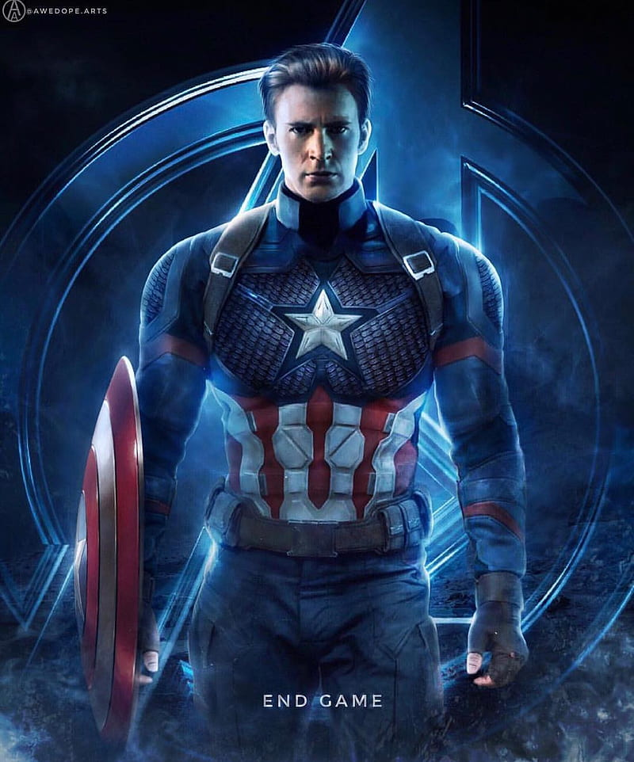
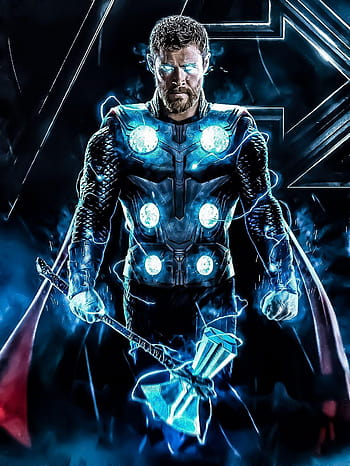
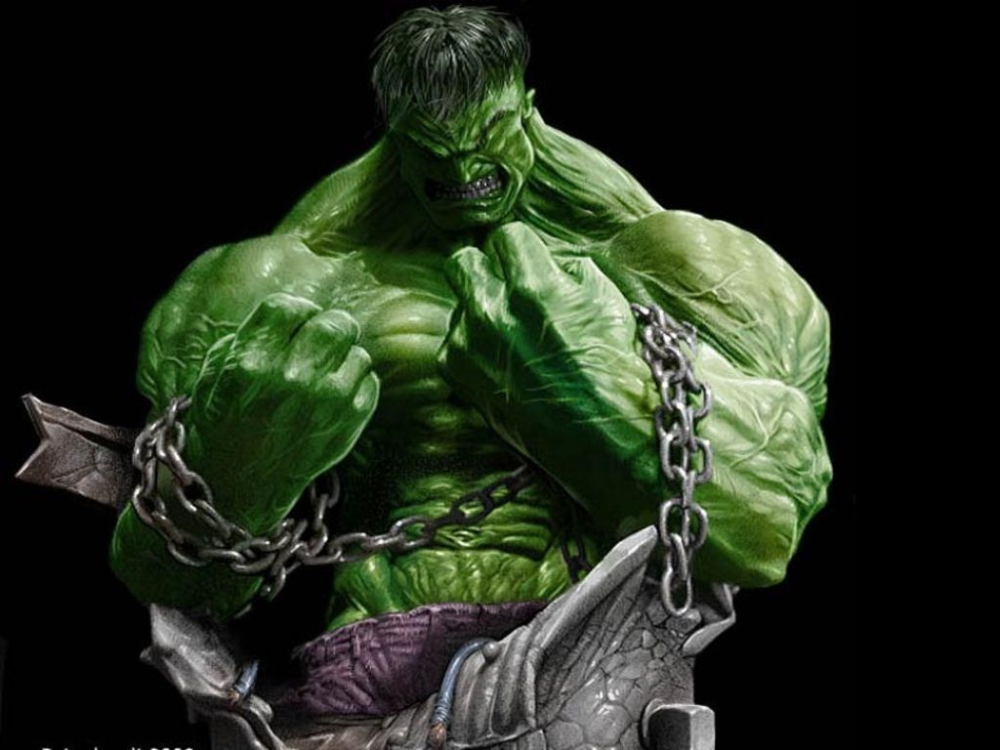

IRON-MAN

Tony Stark is the wealthy son of industrialist and weapons manufacturer Howard Stark and his wife, Maria. Tony grew up a genius with a brilliant mind for technology and inventions and, naturally, followed in his father’s footsteps, inheriting Stark Industries upon his parents’ untimely death. Tony designed many weapons of war for Stark Industries, far beyond what any other company was creating, while living the lifestyle of a bon vivant. Fate would take a dark turn for Tony Stark once he decided to consult on a weapons contract overseas in enemy terrain. An improvised explosive device exploded underneath Tony’s transport, and he was brought to the brink of death. Awakening as a prisoner of the warlord Wong-Chu, Tony made a gruesome discovery: the explosion had sent a piece of shrapnel mere inches from his heart. It was only the timely intervention of fellow captive and engineer Yinsen that kept the shrapnel at bay.While held captive, and forced to work on weapons, Tony turned his near-death experience into inspiration.
CAPTAIN AMERICA
Envious of his friend Bucky Barnes’ military enlistment, and undeterred by his own multiple rejections by the U.S. Army, physical weakling Steve Rogers made one more attempt to join the march of men to fight for their country in the dark days of World War II. Rogers’ valiant wish to fight bullies wherever they were grabbed the attention of scientist Dr. Abraham Erskine, and he handpicked the idealistic young man for the Army’s Super-Soldier program under his supervision. Though Rogers learned of Erskine’s disastrous previous attempts to realize a super-soldier, Germany’s so-called “Red Skull,” he braved the process and emerged from it a new man. With a powerful body and heightened speed and reflexes, Rogers faced his first challenge when forced to chase down Dr. Erskine’s assassin immediately following the experiment. In doing so, he also learned of the involvement of Hydra, the Nazi science division, in the doctor’s murder.
THOR-ODINSON
Thor grows up surrounded by warriors and fighters, and it is among that august group that he can count the majority of his close companions. Heimdall, all-seeing keeper of the Bifrost Bridge, offers Thor advice and counsel whenever he requests it, and many times when he does not. Thor treasures his friendship with Heimdall, and they often fight back to back against those who threaten their home. Likewise, both Sif and the Warriors Three (Volstagg, Fandral, and Hogun) are valued comrades of Thor, battling at his side over the years. They take pride in the fact that they always had each other’s backs in a fight, until the Warriors Three perish during Hela’s siege on Asgard. Of all of Thor’s Avengers teammates, Steve Rogers, Captain America, is perhaps the one that he trusts most with his life, though he will always remain a faithful companion to the others, including Tony Stark and Bruce Banner. The latter, in fact, more recently becomes a closer friend to Thor, as Banner’s alter ego the Hulk battles Thor in the gladiatorial arena on Sakaar and fights beside him in Asgard.
HULK
As intelligent and cerebral as Bruce Banner is, his alter-ego the Hulk is a completely physical phenomenon. The green behemoth possesses the greatest raw strength of any natural being on Earth, with an upper limit that has yet to be fully tested. His leg muscles allow him to leap great distances and land without harm, and his skin can resist damage from heavy weaponry, as well as the natural elements and even unnatural ones. The Hulk has grown somewhat more intelligent over the years, beginning with the mind of nearly an infant and progressing to what might be described as the personality of a toddler. His speech has increased from growls and roars, to one or two words at a time, to full sentences, albeit broken and naïve. Banner recognizes the Hulk as himself, but often refers to him as “the other guy,” while his alter-ego seems to have little love or respect for the mild scientist and may not even be cognizant that Banner is himself.
SPIDERMAN-MAN

A bite from a spider somehow granted teenager Peter Parker its arachnid abilities and instead of using them for personal gain, he decided to help others with them. An orphan living with his aunt, May Parker, the boy chose to wear a mask while fighting crime so as not to burden her with his actions. Calling himself Spider-Man and sporting a pair of web-shooting devices he’d constructed, Parker wound up in internet videos which attracted the attention of Tony Stark. The billionaire industrialist deduced Spider-Man’s secret identity and approached Parker at his and May’s home in Queens, New York with a request for aid from the hero in an upcoming confrontation with Captain America and a group of other rogue Avengers and associates. Parker was initially hesitant to even admit his secret career as Spider-Man, but the thrill of adventure and Stark’s talk of responsibility drew him in and he accepted the invitation, as well as a new, high-tech costume and web-shooters.